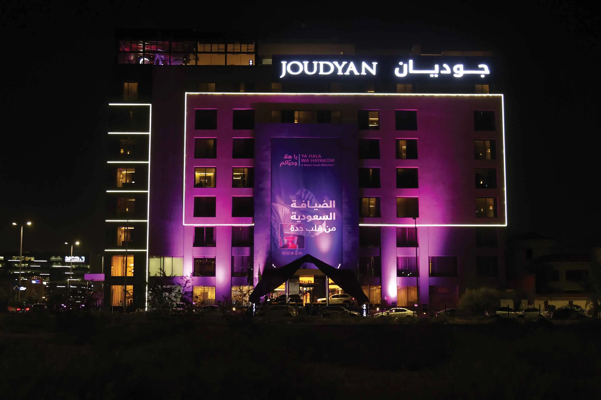

في الوقت الحالي، لا توجد إدخالات متاحة للعرض

استعراض الاستثمارات

الاستثمارات المؤسسية
تساهم سدكو في جهود التنمية في المملكة من خلال الاستثمارات الاستراتيجية في القطاعات ذات الأولوية.

ظلت سدكو على مدى قرابة نصف قرن بمثابة دعامة أساسية للشركات والمجتمعات المحلية تدفعها نحو الازدهار والرخاء، بفضل تفانيها في البحث عن الفرص الاستثمارية التي تحفز النمو الاقتصادي وتسهم في التنمية الاجتماعية على مستوى المملكة.
وفي حين أننا نعطي الأولوية للقطاعات الحيوية مثل الرعاية الصحية والخدمات اللوجستية والتعليم والضيافة، فإننا لا ندخر جهدًا في البحث عن فرص استراتيجية واعدة تتيح لنا التوسع في فئات أصول جديدة ووضع مقاييس أداء واضحة لمحفظتنا الاستثمارية. وبفضل خبراتنا الطويلة وتعاوننا المستمر مع شركائنا الرئيسيين، نتمكن من التعامل بمرونة مع المشهد الاستثماري المتغير والإسهام بفعالية في مسيرة النمو الاقتصادي للمملكة.
نسترشد بقيَمنا الراسخة
نضع على رأس أولوياتنا الاستثمارات المسؤولة وطويلة الأمد التي تحقق القيمة المثلى لمساهمينا وتسهم في دعم ازدهار المملكة. وتشكل سياسة الاستثمار في سدكو الركيزة الأساسية لقراراتنا الاستثمارية، فهي تحدد المعايير التي توجه قراراتنا مثل القطاعات والمجالات وفئات الأصول وأحجام الاستثمارات والعوائد المتوقعة وحصص الملكية ومستويات المشاركة المرغوبة.
وقبل الشروع في أي استثمار، نجري الدراسات النافية للجهالة، التي تتضمن عمليات التحقق الصارمة للمعلومات المرتبطة بالتقييمات المالية والقانونية والتجارية. وتضمن هذه العملية توافق أي فرصة استثمارية مع أهدافنا المالية وتعكس أيضاً التزامنا الثابت بالاستدامة والشفافية والمساءلة والممارسات التجارية الأخلاقية.
كما أن التقارير الدورية لأداء استثماراتنا توفر المراقبة والتدقيق على نحو مستمر لضمان الامتثال الدائم للوائح والتوافق مع أهدافنا وقيَمنا.
الرعاية الصحية
التعليم
الضيافة والسياحة
إدارة الأصول
قطاعات أخرى
الخدمات اللوجستية
دفع عجلة استثماراتنا
انطلاقًا من دورها كمستثمر مالي نشط، تعتمد سدكو على إدارة قوية للشؤون المالية لدعم محورَي الاستثمار الرئيسيَين بفعالية. وتضمن هذه الإدارة توافر السيولة الكافية وتنفيذ الاستثمارات في الوقت المناسب، وهو أمر جوهري لنجاح استثماراتنا.
وتعزيزاً لقدراتنا التمويلية، نعمل على وضع خطة تمويل استراتيجية تتضمن تخصيص تسهيلات مصرفية لكل محفظة والاستفادة من الأصول الحالية كضمانات لتقليل تكاليف الاقتراض. إضافةً إلى ذلك، نتبنى استراتيجية ديناميكية لإدارة السيولة تسهم في تحسين التدفقات النقدية وتعزيز الاستفادة من الأصول السائلة وتحقيق عوائد مجدية من ودائع المرابحة والصكوك السيادية.
شهدت محفظتنا الاستثمارية توسعاً كبيراً خلال عام 2024 في مختلف فئات الأصول، ما عزز جهودنا في التنويع وتحسين السيولة. كما أجرينا مراجعة شاملة لبرنامج الاستثمار في إدارة المحافظ الاستثمارية التقديرية استجابةً لتطبيق لوائح الزكاة الجديدة.
المحفظة الاستثمارية
تميزت محفظة الاستثمارات المحلية لسدكو خلال عام 2024 بتنوع ملحوظ، إذ شملت قطاعات مختلفة وأحجام شركات متباينة وفئات أصول متنوعة، بما فيها الاستثمارات المباشرة في الشركات العامة والخاصة، والاستثمارات غير المباشرة من خلال إدارة المحافظ الاستثمارية التقديرية التي تشمل الأسهم العامة والسندات المتوافقة مع الشريعة (الصكوك)، وصناديق الأسهم الخاصة/ رأس المال الجريء.
حددنا ستة مجالات رئيسية لتوجيه الاستثمارات المحلية:
تعزيز مشاركة القطاع الخاص في مسيرة التنمية الوطنية.
إطلاق العنان لإمكانات المملكة العربية السعودية في مجال الترفيه والسياحة.
دعم النمو في قطاع العقارات بما يتماشى مع التوسع في المملكة العربية السعودية.
التناغم مع توجهات المملكة نحو تحقيق الاستدامة.
تطوير البنية التحتية التي تدعم أهداف التنمية في المملكة.
توطين سلاسل التوريد لتعزيز الإنتاج الوطني.
الاستثمارات المباشرة
نكرِّس جهودنا لدعم الشركات المحلية، سواءً في القطاع العام أو الخاص، لتمكينها من تحقيق النجاح وتعزيز مساهمتها في دفع عجلة التنمية الاقتصادية للمملكة. ومن هذا المنطلق، نسعى بكل جهدٍ إلى بناء شراكات استراتيجية تعود بالنفع على محفظتنا الاستثمارية والمجتمع بأسره.
الاستثمارات غير المباشرة
تشمل الاستثمارات غير المباشرة الاستثمارات الموجهة إلى مديري الصناديق والأصول المحليين المتخصصين في إدارة المحافظ التقديرية المحلية وصناديق رأس المال الجريء وصناديق الأسهم الخاصة في قطاعات مثل تقنية المعلومات والخدمات اللوجستية والبنية التحتية. وتسهم هذه المجموعة من الأدوات وفئات الأصول المتوافقة مع الشريعة في تحقيق نمو مستدام لرأس المال وتوفير دخل منتظم، فضلاً عن إحداث أثر مالي واجتماعي ملموس في المملكة.
الاستثمارات الخاصة غير المباشرة
صندوق فرص قطاع الرعاية الصحية السعودي التابع لشركة الملز المالية
(عيادات رام الطبية)
صندوق نواة للمشاريع الأول
صندوق عافية التابع لشركة شركة تي في إم كابيتال
أبرز الإنجازات في ميدان الاستثمار المحلي لعام 2024
شهدت محفظة الاستثمار المحلية نمواً ملحوظاً بفضل الاستثمارات الجديدة، فضلاً عن النمو القوي في قيمة استثماراتنا القائمة. وعززت الأموال التي تم استغلالها، بما يتوافق مع استراتيجيتنا، جهودنا في التنويع خلال العام.
الشراكة مع بدجت السعودية
أُنشئت شركة عالم السيارات عام 1981، وكانت واحدة من أوائل الشركات في محفظة سدكو وعلامة بارزة من علامات نموها المبكر. وعلى مدى أكثر من أربعة عقود، تطورت الشركة لتصبح واحدة من الشركات الرائدة في مجال تأجير السيارات بنظام التأجير طويل الأجل في المملكة. وفي يوليو 2024، تمكنا من إتمام صفقة بيع شركة عالم السيارات المملوكة بالكامل لنا إلى شركة بدجت السعودية (الشركة المتحدة الدولية للمواصلات)، وهي شركة رائدة في السوق الإقليمية. وبفضل هذه الصفقة الاستراتيجية التي استحوذت من خلالها شركة سدكو على حصة نسبتها %8.96 في شركة بدجت السعودية، أصبحنا أحد المساهمين الرئيسيين في أكبر شركة لتأجير السيارات بنظامي التأجير طويل الأجل وقصير الأجل في المنطقة.
أبرز الإنجازات في المحفظة لعام 2024
تحقيق القيمة من خلال عقد شراكات فعالة
تتعاون سدكو مع شركات المحفظة على عدة مستويات، حيث تقدم التوجيه الاستراتيجي، والإشراف المالي، والدعم في عمليات الاندماج والاستحواذ، مع التركيز على تقليص مشاركتها في العمليات التشغيلية تدريجياً. وسينصب تركيزنا الأساسي على التواصل مع فِرق القيادة والمشاركة الفعالة في مجالس الإدارة واللجان الرئيسية، مثل لجنة التدقيق والمخاطر، ولجنة التعويضات والترشيحات، واللجان التنفيذية. ويتوافق تمثيلنا في مجالس الإدارة مع حصص ملكيتنا في كل شركة.
هذا، وتلتزم شركة سدكو التزامًا تامًا بمبادئ الشريعة في جميع استثماراتها. ومن منطلق مسؤوليتنا تجاه المجتمع، نولي اهتمامًا بالغًا بمبادرات الحوكمة البيئية والاجتماعية وحوكمة الشركات في شركات محفظتنا، من خلال دعم أنشطة المسؤولية الاجتماعية للشركات، وتعزيز الحوكمة الفعالة، وتطوير استراتيجيات النمو، وإدارة المخاطر الرئيسية، وضمان استدامة استثماراتنا على المدى الطويل.
وخلال عام 2024، واصلنا التوسع في فئات أصول جديدة بما يتماشى مع استراتيجيتنا المعتمدة، مما أسهم في تعزيز تنويع محفظة استثماراتنا المحلية. وفي خطوة رائدة، دشَّنا أول استثمار لنا في الصكوك المؤسسية، وعززنا استثماراتنا في الصكوك الحكومية، بهدف تنويع محفظة استثماراتنا والاستفادة من العوائد المجزية.
وعلى صعيد آخر، شهد أكتوبر 2024 افتتاح فندق جوديان طريق الملك، الذي يتميز بموقعه الاستراتيجي في قلب مدينة جدة على طريق الملك عبدالعزيز، وأقيمت احتفالية ضخمة بمناسبة الافتتاح.
وقعت شركة سدكو كابيتال مذكرة تفاهم مع شركة رسم المتطورة لإدارة الأملاك لاستكشاف فرص التعاون التي تعزز كفاءة إدارة الأصول العقارية، مؤكدين بذلك التزامنا بالاستفادة من الخبرات المتخصصة وتحقيق قيمة مستدامة لعملائنا الكرام.
أطلقت شركة سدكو كابيتال صندوق استثمار عام مفتوح ومتوافق المعايير والضوابط الشرعية، يستثمر في الطروحات الأولية لأسهم الشركات المدرجة في كل من السوق الرئيسية والسوق الموازية لتداول السعودية، بهدف تحقيق النمو في رأس المال على المدى المتوسط إلى المدى الطويل. ويلتزم الصندوق بالمعايير والضوابط الشرعية المجازة من لجنة الرقابة الشرعية للصندوق.
كذلك، أطلقت سدكو كابيتال صندوق سدكو كابيتال متعدد الأصول المتداول، وهو صندوق استثمار مغلق متداول ومتوافق مع المعايير والضوابط الشرعية ومؤسس وفقاً لأحكام لائحة صناديق الاستثمار الصادرة عن مجلس هيئة السوق المالية في المملكة العربية السعودية.

التطلعات لعام 2025
نعلن عن عزمنا عن إجراء مراجعة استراتيجية شاملة في عام 2025، نستعرض فيها بكل فخر واعتزاز ما حققناه من إنجازاتنا على مدى السنوات الثلاث الماضية. وتهدف هذه المراجعة إلى ضمان انسجام استراتيجيتنا بشكل تام مع الجدول الزمني والأهداف الطموحة لرؤية السعودية 2030، في ضوء الأحداث البارزة التي شهدتها المملكة مؤخرًا مثل فوز المملكة باستضافة كل من معرض إكسبو الدولي 2030 في مدينة الرياض وبطولة كأس العالم 2034. ستكون الاستراتيجية المنقحة بمثابة البوصلة التي توجه خطواتنا المستقبلية، بما في ذلك مواصلة التوسع في فئات الأصول المتنوعة واستكشاف خيارات استراتيجية لمحفظة استثماراتنا المحلية.